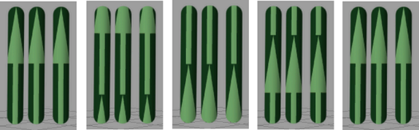
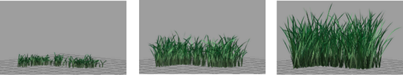
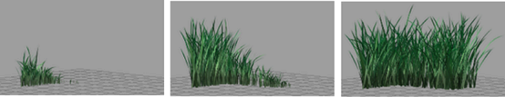
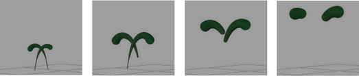

使用“Paint Effects”流动画功能，可以设置以下的动画：
- 间距、扭曲和/或纹理流
- 均匀管生长
- 生长模拟
- 管消亡
设置间距、扭曲和/或纹理流动画
如果管上应用了间距、扭曲和/或纹理，可以设置图案动画，它们会沿管长度创建“流动”或循环，就如在末端连接管一样。
通过设置间距流动画，可以创建降雨等效果。通过设置扭曲流动画，可以获得螺旋效果。下图显示了一个纹理（从根流到尖端的一个完整循环）。

创建/生成间距、扭曲和纹理流
- 选择笔划。
- 在“属性编辑器”(Attribute Editor)中，单击笔刷选项卡。
- 设定所需间距、扭曲和/或纹理设置。有关详细信息，请参见间隙笔刷设置、扭曲笔刷设置和纹理笔刷设置。
- 展开“流动画”(Flow Animation)并设定间距、扭曲或纹理的“流速”(Flow Speed)。正数使它们从管基础流到尖端。负值使它们从尖端流到基础。
“时间片段”(Time Clip)和“笔划时间”(Stroke Time)选项在启用后还可设置管生长的动画。有关信息，请参见本主题中的其他部分：设置均匀管生长动画、设置生长模拟动画和设置管消亡动画。
您可以使用“时间”(Time)设置设置随时间变化的流的动画。有关详细信息，请参见流动画笔刷设置。
- 如果要设置间隙流的动画，可通过单击场景视图中的“向前播放”(Play Forward)按钮，在渲染动画之前检查流是否与您希望的一样。
- 渲染动画。请参见使用“Paint Effects”笔划渲染场景。
设置均匀管生长动画
可以沿同时生成的笔划路径设置管动画，如同它们全部都同时“生长”一样。当管生长时，任何已应用到管的间距、扭曲或纹理将沿管长度流动。

设置所有同时沿笔划生长管的动画
- 选择笔划。
- 在“属性编辑器”(Attribute Editor)中，单击笔刷选项卡。
- 展开“流动画”(Flow Animation)并设定“流速”(Flow Speed)。（如果已应用间距、扭曲或纹理到管，流速度还将定义它们沿管的流动速度。）
- 启用“时间片段”(Time Clip)。
- 设定“开始时间(秒)”(Start Time (seconds))，这是管将首先显示的动画时间，以及“结束时间(秒)”(End Time (seconds))，这是管首先开始消亡的动画时间。
设定“结束时间(秒)”(End Time (seconds))要在您的动画结束的同一帧或后面的帧结束。这样可以确保管在动画完成之前不会消亡。有关使管消亡的详细信息，请参见下文中的“设置管消亡动画”部分。
您可以使用“时间”(Time)设置来设置随时间变化生成的动画。有关详细信息，请参见流动画笔刷设置。
注： “开始时间(秒)”(Start Time (seconds))和
“结束时间(秒)”(End Time (seconds))以秒为单位来测量。因此，例如，如果
“时间”(Time)单位设置为 24 fps（，然后单击
“设置”(Settings)类别），且
“开始时间(秒)”(Start Time (seconds))为 1，则管将首先在第 24 帧处显示。
如果知道要管显示的帧，将该帧数除以“时间”(Time)单位定义的每秒帧数，以确定要在“开始时间(秒)”(Start Time (seconds))框中输入的值。例如，如果希望管在第 60 帧开始显示，同时“时间”(Time)单位被设定为 NTSC (30 fps)，将 60 帧除以每秒 30 帧，得出 2 秒的“开始时间(秒)”(Start Time (seconds))。
您可以在该字段中创建一个表达式来执行该计算。键入等号 (=)，后面跟着计算。在上一个示例中，您可以键入：
=60.0/30
请注意，时间必须拥有浮点小数。
- 在场景视图中，单击“向前播放”(Play Forward)按钮检查生长是否与您希望的一样。
- 渲染动画。请参见使用 Paint Effects 笔划渲染场景。
注： 如果同时设置管生长和纹理流（例如，纹理树的生长）动画，则该纹理流速率可能比树的生长速率更快。若要解决该问题，在命令行上选择笔划并运行脚本 freezeBrushTexture.mel（存储在 mayapath/Maya/Contents/scripts/paintEffects (Mac OS X) 或 mayapath/scripts/paintEffects（Windows 和 Linux）目录）。
设置生长模拟动画
可以设置生长模拟动画。笔划开头的“已生长”管开始在笔划路径开头生长，并继续作为新管沿路径以步数生长。当管生长时，任何已应用到管的间距、扭曲或纹理将沿管长度流动。

设置所有生长模拟动画
- 选择笔划。
- 在“属性编辑器”(Attribute Editor)中，单击笔刷选项卡。
- 展开“流动画”(Flow Animation)并设定“流速”(Flow Speed)。（如果已应用间距、扭曲或纹理到管，流速度还将定义它们沿管的流动速度。）
- 启用“时间片段”(Time Clip)。
- 启用“笔划时间”(Stroke Time)。
- 设定“开始时间(秒)”(Start Time (seconds))，这是管将首先显示的动画时间；以及“结束时间(秒)”(End Time (seconds))，这是管首先开始消亡的动画时间。
设定“结束时间(秒)”(End Time (seconds))要在您的动画结束的同一帧或后面的帧结束。这样可以确保管在动画完成之前不会消亡。有关使管消亡的详细信息，请参见下文中的“设置管消亡动画”部分。
您可以使用“时间”(Time)设置来设置随时间变化生成的动画。有关详细信息，请参见流动画笔刷设置。
注： “开始时间(秒)”(Start Time (seconds))和
“结束时间(秒)”(End Time (seconds))以秒为单位来测量。因此，例如，如果将
“时间”(Time)单位设定为 24 fps（
“窗口 > 设置/首选项 > 首选项”(Window > Settings/Preferences > Preferences)，然后单击
“设置”(Settings)类别），同时
“开始时间(秒)”(Start Time (seconds))为 1，那么管将首先在第 24 帧显示。
如果知道要管显示的帧，将该帧数除以“时间”(Time)单位定义的每秒帧数，以确定要在“开始时间(秒)”(Start Time (seconds))框中输入的值。例如，如果要管显示在第 60 帧处且“时间”(Time)单位设定为“NTSC(30fps)”(NTSC (30 fps))，将该 60 帧除以每秒 30 帧，就会得出“开始时间(秒)”(Start Time (seconds))为 2 秒。
您可以通过在该字段中创建一个表达式来执行该计算。键入等号 (=)，后面跟着计算。在上一个示例中，您可以键入：
=60.0/30
请注意，时间必须拥有浮点小数。
- 在场景视图中，单击“向前播放”(Play Forward)按钮检查生长是否与您希望的一样。
- 渲染动画。请参见使用 Paint Effects 笔划渲染场景。
注： 如果同时设置管生长和纹理流（例如，纹理树的生长）动画，则该纹理流速率可能比树的生长速率更快。若要解决该问题，在命令行上选择笔划并运行脚本 freezeBrushTexture.mel（存储在 Maya 脚本目录中）。
设置管消亡动画
可以设置出生和消亡时间来定义动画中的管开始生长的时间以及开始消失的时间，从而设置特殊效果动画，如管从笔划路径“爆炸”。
当动画到达消亡时间时，管根部的分段将消失（或消亡），同时继续在管尖端添加分段。当管达到其寿命时，分段将继续从根部到尖端开始消失，直到管完全消失。
当管生长时，任何已应用到管的间距、扭曲或纹理将沿管长度流动。

设置管消亡动画
- 选择笔划。
- 在“属性编辑器”(Attribute Editor)中，单击笔刷选项卡。
- 展开“流动画”(Flow Animation)并设定“流速”(Flow Speed)。（如果已应用间距、扭曲或纹理到管，流速度还将定义它们沿管的流动速度。）
- 启用“时间片段”(Time Clip)。
- 启用“笔划时间”(Stroke Time)。
- 设定“开始时间(秒)”(Start Time (seconds))和“结束时间(秒)”(End Time (seconds))，前者是动画中管首次出现的时间，后者是动画中管首先开始消亡的时间。
您可以使用“时间”(Time)设置来设置随时间变化管消亡的动画。有关详细信息，请参见流动画笔刷设置。
注： “开始时间(秒)”(Start Time (seconds))和
“结束时间(秒)”(End Time (seconds))以秒为单位来测量。因此，例如，如果
“时间”(Time)单位设置为 24 fps（，然后单击
“设置”(Settings)类别），且
“结束时间(秒)”(End Time (seconds))为 4，则管将在第 96 帧处开始消亡。
如果知道管要在哪一帧开始消亡，请将该帧编号除以“时间”(Time)单位定义的每秒帧数，即可确定要在“结束时间(秒)”(End Time (seconds))框中输入的值。例如，如果希望管在第 120 帧开始消亡，并且“时间”(Time)单位设定为“NTSC(30fps)”，则将 120 帧除以每秒 30 帧，得出“结束时间(秒)”(End Time (seconds))为 4 秒。
您可以在该字段中创建一个表达式来执行该计算。键入等号 (=)，后面跟着计算。在上一个示例中，您可以键入：
=120.0/30
请注意，时间必须拥有浮点小数。
- 在场景视图中，单击“向前播放”(Play Forward)按钮检查动画是否与您希望的一样。
- 渲染动画。请参见使用 Paint Effects 笔划渲染场景。